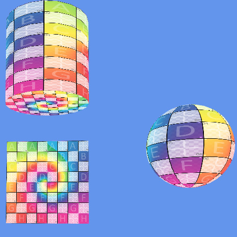

3D Graphics

The Procedural Geometric Modeling project focuses on programmatically generating 3D shapes without relying on external 3D models. The primary goal was to create mathematical algorithms that produce vertex attributes and index buffers for several primitive shapes: Plane, Cube, Sphere, Torus, Cylinder, and Cone.
Generating standard 3D primitives algorithmically was an insightful exercise. Figuring out how to properly align UV mapping along the seams of spheres and toruses proved challenging, as well as managing the separate index buffers for correct rendering of object caps (for cylinders and cones). Implementing procedural meshing helped solidify my understanding of the relationship between geometry data, vertex attributes, and rendering topology in modern graphics APIs.